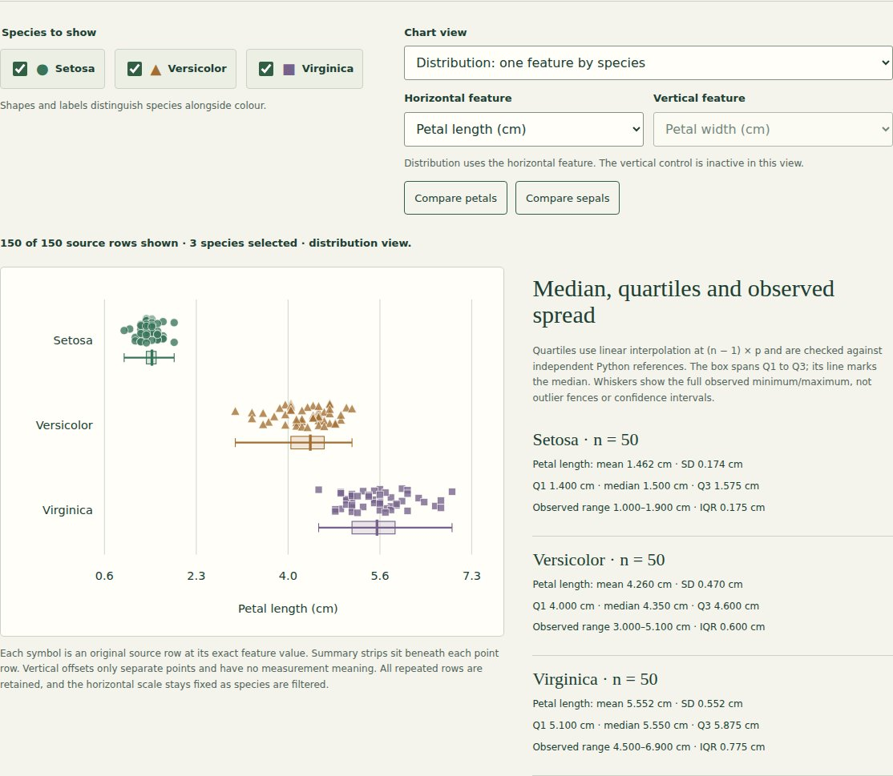
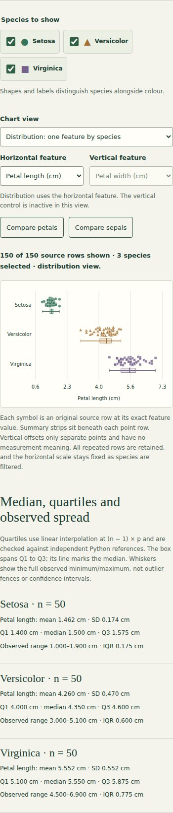
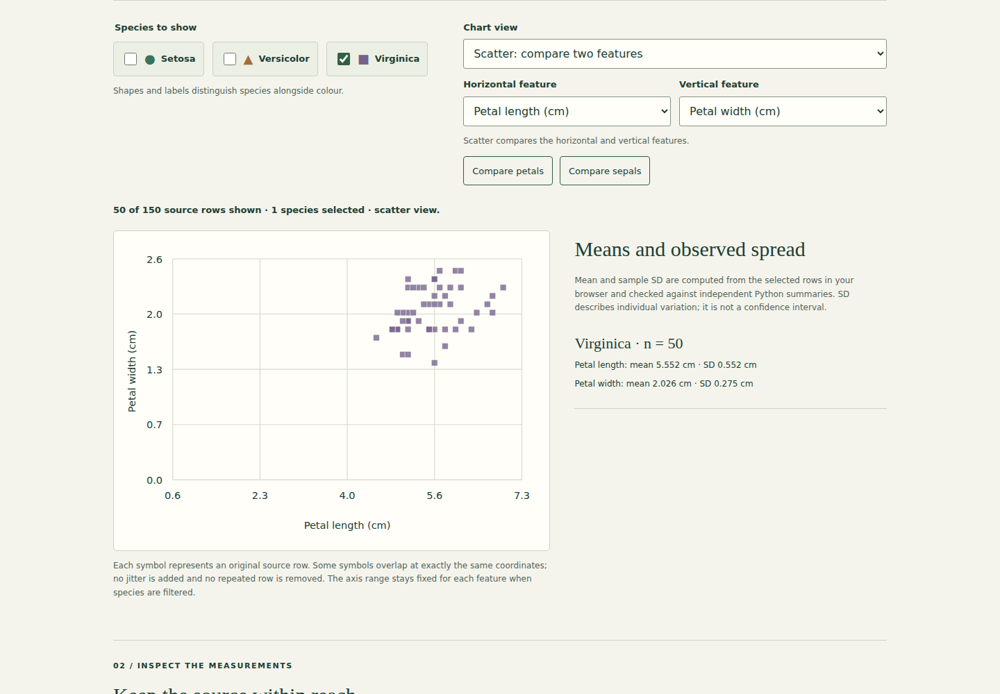

Iris dataset exploration.
Explore feature distributions with original observations, independently checked quartiles and consistent species filters and exports.
Public demo: browser-based static version. See source for architecture and limitations.

What I built
Extended the existing observation lab with a single-feature distribution view, auditable medians/quartiles and full-range summaries, preserving the scatter controls and original rows.
Why it matters
A scatter plot shows relationships, but makes the distribution of one measurement harder to inspect. A shared observed-data view connects centres and spread to the source rows behind them.
How it works
- 01
Choose the scatter or single-feature distribution view. Distribution uses the horizontal feature and explains why the vertical control is inactive.
- 02
Filter species while retaining fixed feature ranges. Inspect original points, medians, quartiles, full observed ranges and IQR; browser statistics are checked independently in Python.
- 03
Return to the scatter presets, inspect selected rows or export all four original features. View changes never replace or remove source observations.
The technical challenge
A distribution graphic can silently hide repeated observations, use ambiguous quartile conventions or let decorative offsets look like measurements. The lab preserves every supplied row, states its linear quantile method, labels full-range whiskers and gives vertical offsets no numerical meaning. Independent Python and browser calculations agree, and filtering changes only the view and selected-row export.
What it demonstrates
Descriptive data storytelling, precise quantile definitions, independent numerical verification, accessible controls and source-data integrity.
Evidence, with context.
150 supplied observations, 50 per species. Mean petal lengths: Setosa 1.462 cm, Versicolor 4.260 cm, Virginica 5.552 cm. Observed petal-length medians: Setosa 1.500 cm (Q1 1.400, Q3 1.575), Versicolor 4.350 cm (Q1 4.000, Q3 4.600), Virginica 5.550 cm (Q1 5.100, Q3 5.875). Setosa forms a distinct petal cluster in these observations; Versicolor and Virginica overlap. All four measurements and all species labels are observed data, not model predictions. Repeated measurement rows are retained; this descriptive teaching sample does not establish general classification performance.
Verified source: 76be48a2f27f · Tests and visual capture ↗





Scope and limitations
This is descriptive exploration of a small, familiar teaching dataset. Separation in these observations is not independent validation of a classifier or evidence of general performance. Pooled correlations mix species and do not establish causation. Identical measurement rows are retained because equality alone does not prove duplicate sampling. The supplied CSV is preserved; historical Iris variants differ in two documented observations.
Visual provenance and source attribution are recorded in the evidence register ↗.
Under the surface.
Architecture, methods and improvements
A pure browser helper computes Type 7 linear quartiles from a sorted copy, preserving row order. Python exports twelve distribution references using NumPy linear quantiles; standard-library inclusive quartiles independently reconcile them. Both plot modes share feature scales and species markers. Distribution points keep exact feature values; deterministic vertical offsets separate observations, and summary strips sit below them for clarity. Six Python, five Node and five browser checks cover source variants/repeats, quartiles and edge cases, actual SVG geometry for every feature/species, filters, fixed scales, all-feature CSV exports, keyboard controls and mobile layout. Generated build metadata remains untracked.
Try it locally
Install requirements.txt; run python explore_iris.py, python -m unittest discover -p "test_*.py" -v and python build_explorer.py. Run npm ci, npm run test:rules, npx playwright install chromium and npm run test:browser. Serve docs locally to explore.
The portfolio is a static GitHub Pages site. Server applications run locally; the portfolio does not collect bookings, credentials or payments.